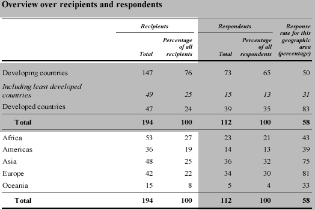
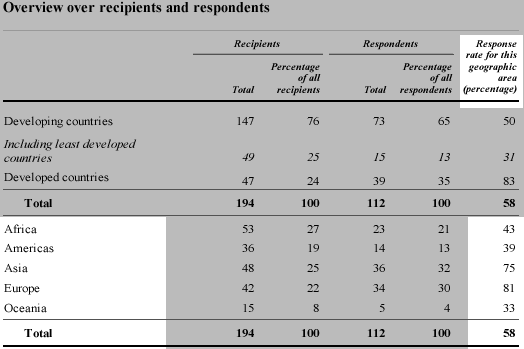

Réponses à l'enquête de l'ONU
L'Organisation des Nations Unies a mené une enquête au sujet de la mesure dans laquelle les pays mis en œuvre un ensemble de «Principes fondamentaux des statistiques officielles» dans leurs bureaux nationaux de statistiques. Le tableau ci-dessous a été publié dans un rapport de l'ONU et décrit quels étaient les pays ont envoyé des questionnaires (les bénéficiaires) et celles qui retourné les questionnaires (répondants).
|  |
La partie mise en surbrillance de la table ci-dessus est une table de fréquences qui classe les pays bénéficiaires par région. Chaque pays se trouve exactement dans l'une des cinq régions. Les deux colonnes à sa forme droite une autre table de fréquence décrivant la répartition des répondants entre les régions.
Toutefois, les informations qui sont présentées ci-dessous n'est pas un tableau de fréquences — les pays les moins avancés contribuent de 1 à chacune des deuxpremières lignes (en développement et moins avancés), et donc les pourcentages ne totalisent pas 100%.
 |
Bien qu'il n'y ait rien de "mal" avec cette table, son format peut causer de la confusion et il est assez facile de restructurer l'information comme une table de fréquence appropriée, comme indiqué ci-dessous.
Il est particulièrement important de reconnaître les tableaux de fréquence, car les méthodes graphiques qui seront décrites dans la section suivante sont inappropriés pour la plupart des autres types de données.
Enfin, notez que les valeurs en bas à droite de la table ci-dessous ne forment pas un tableau de fréquences soit.
|  |
Bien que ces valeurs sont des pourcentages, ils ne totalisent pas 100%. En effet, chacun de ces pourcentages vient réellement d'une table simple fréquence qui classe les pays dans une région à une répondants et les non-répondants. Par exemple, le taux de réponse de 81% pour l'Europe provient de la table de fréquences suivantes.
Quand il ya seulement 2 catégories, une seule valeur (tels que le taux de réponse de 81% ici) résume bien la table de fréquence, donc la colonne du taux de réponse dans le tableau publié un résumé concis.